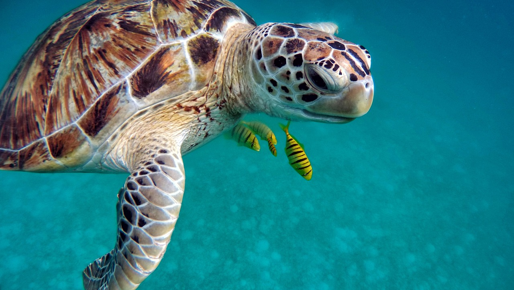

Sea Turtle
Sea turtles return to nest at the same beach where they were hatched.
- Lifespan: Up to 50-70 years
- Size: Up to 1.4m
- Weight: 300 to 600kg
- Habitat: Ocean
Sea turtles, with streamlined bodies and distinctive shells, inhabit oceans globally, feeding primarily on marine plants and animals. Females return to birth beaches to lay eggs in sand nests, leaving hatchlings to navigate to the sea independently. Threatened by habitat loss, pollution, and poaching, they require urgent conservation efforts for survival.